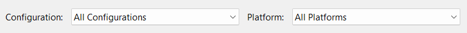

In the solution directory, create a folder called dependency
this is where your GLFW will be located
In your extracted GLFW binary directory, copy include and lib-vc2022 and paste it in the dependency > glfw directory of your project
In your project dir, create an entry source file. in the src directory
then Main.cpp for your entry point:
Getting GLFW to Run Window
Go to GLFW Documentation copy the source code and paste it in your Main.cpp. you will get a number of errors,
#include<GLFW/glfw3.h>intmain(void){GLFWwindow*window;/* Initialize the library */if(!glfwInit())return-1;/* Create a windowed mode window and its OpenGL context */window=glfwCreateWindow(640,480,"Hello World",NULL,NULL);if(!window){glfwTerminate();return-1;}glfwMakeContextCurrent(window);/* Make window's context current */while(!glfwWindowShouldClose(window)){/* Loop until the user closes win *//* Render here */glClear(GL_COLOR_BUFFER_BIT);glfwSwapBuffers(window);/* Swap front and back buffers */glfwPollEvents();/* Poll for and process events */}glfwTerminate();return0;}
So Next Step is:
Go to your Project Property ALT + ENTER
Make sure your program is in all cofiguration and All Platforms

Under C/C++ > General > Additional Include Directories > ⬇️ Edit add $(SolutionDir)\dependency\glfw\include
Under Linker > General > Additional Libary Directories add $(SolutionDir)\dependency\glfw\lib-vc2022
Under same Linker go to Input > Additional Dependencies add glfw3.lib;opengl32.lib.
Note
glfw3is located in your $(SolutionDir)\dependency\glfw\lib-vc2022
While opengl32.lib is windows dependent
- Finally, Remember to Change your architecture you are rendering in to x86
Using GLEW for Opengl functions
Download from here and copy to dependency directory
Add the include and lib then link the glew32s.lib on your Visual studio.
Under C/C++ > Preprocessor > preprocessor def add GLEW_STATIC macro
The following are very important for glew to function properly:
make sure you include #include <GL/glew.h> before any opengl include
An opengl context must be called before calling glewInit()
#include<GL/glew.h>#include<GLFW/glfw3.h>#include<iostream>intmain(void){GLFWwindow*window;/* Initialize the library */if(!glfwInit())return-1;/* Create a windowed mode window and its OpenGL context */window=glfwCreateWindow(640,480,"Hello World",NULL,NULL);if(!window){glfwTerminate();return-1;}glfwMakeContextCurrent(window);/* Make window's context current */if(glewInit()!=GLEW_OK)std::cout<<"Error! at GLEW "<<std::endl;// Get the OPENGL VERSION std::cout<<glGetString(GL_VERSION)<<std::endl;...glfwTerminate();return0;}
GLFW / GLAD Setting Up
Dependency Setup Folder
Since you will be build a lot of small OpenGL projects, Its advicable to have a general dependency directory where you will always refer to your includes, libraries and binaries when you create new projects. This will saves you from have multiple copies on every projects.
Here is my preferred setup is:
You can add more as times goes by, eg. the asset importer assimp, font library and video library like ffmpeg etc.
Building GLFW
Here we are going to download and compile the source code ourself. This is important because not all the library we will be working with will have a precompile binary for use we will have to do that ourself. So the earlier the better.
Download the the source package code from GLFW repository site and the extract the folder.
Building GLFW with CMake
The next step involves the use of CMake to build our source code
Inside your newly extracted glfw3+ folder. create a new build folder
right Click inside your current build folder RIGHT+CLICK and Open in Terminal
What this means is build the glfw3.4 folder inside the build folder
then you will get the following output
Then all you have to do is lunch GLFW.sln and build it in Visual Studio
The library we need is located in the following folder
copy the glfw include folder (glfw3.4/include) and your glfw library(glfw3.4/build/src/Debug/glfw3.lib) , inside your dependency directory in the OpenGL folder
Options - Check Generate a loader (checked by default)
Then click GENERATE
Download the glad.zip file
when you extract you will find src and include folder
The include will be in C:/OpenGL/dependency/GLAD/include
The src/glad.c will be in your ${ProjectDir}/src where your main.cpp is located
Setting up Visual Studio
Select your Program solution and ALT + ENTER
Visual Studio directory setup
Linking library in Linker > Input
Run Basic Code
Main.cpp
#include<iostream>#include<glad/glad.h>#include<GLFW/glfw3.h>voidprocessInput(GLFWwindow*window){if(glfwGetKey(window,GLFW_KEY_ESCAPE)==GLFW_PRESS)glfwSetWindowShouldClose(window,true);}voidframebuffer_size_callback(GLFWwindow*window,intwidth,intheight){glViewport(0,0,width,height);}// settingsconstunsignedintS_W=800;constunsignedintS_H=600;intmain(){// glfw: initialize and configure//--------------------------------glfwInit();glfwWindowHint(GLFW_CONTEXT_VERSION_MAJOR,3);glfwWindowHint(GLFW_CONTEXT_VERSION_MINOR,3);glfwWindowHint(GLFW_OPENGL_PROFILE,GLFW_OPENGL_CORE_PROFILE);/* Create a windowed mode window and its OpenGL context */GLFWwindow*window=glfwCreateWindow(S_W,S_H,"Testing Scene",NULL,NULL);if(!window){std::cout<<"Failed to create GLFW window"<<std::endl;glfwTerminate();return-1;}glfwMakeContextCurrent(window);/* Make window's context current */glfwSetFramebufferSizeCallback(window,framebuffer_size_callback);// glad: load all OpenGL function pointers// ---------------------------------------if(!gladLoadGLLoader((GLADloadproc)glfwGetProcAddress)){std::cout<<"Failed to initialize GLAD"<<std::endl;return-1;}while(!glfwWindowShouldClose(window)){/* Loop until the user closes win */// inputprocessInput(window);// render// ------glClearColor(0.7f,0.3f,0.7f,1.0f);glClear(GL_COLOR_BUFFER_BIT);glfwSwapBuffers(window);/* Swap front and back buffers */glfwPollEvents();/* Poll for and process events */}glfwTerminate();return0;}